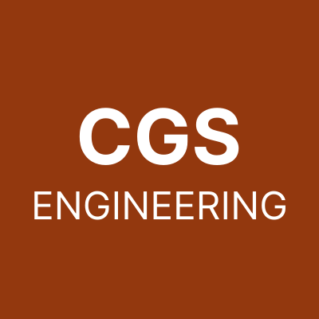
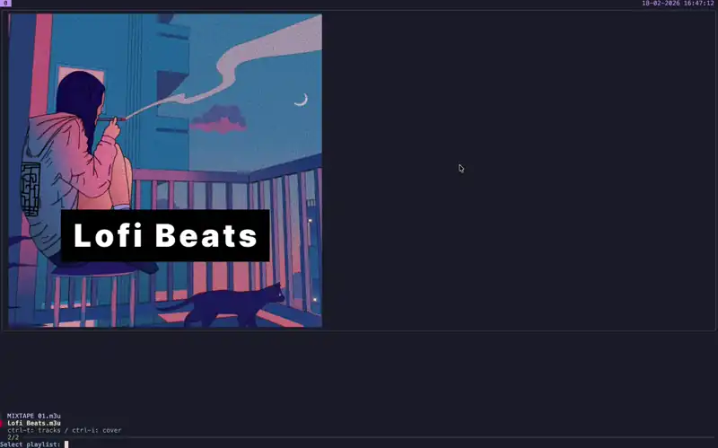
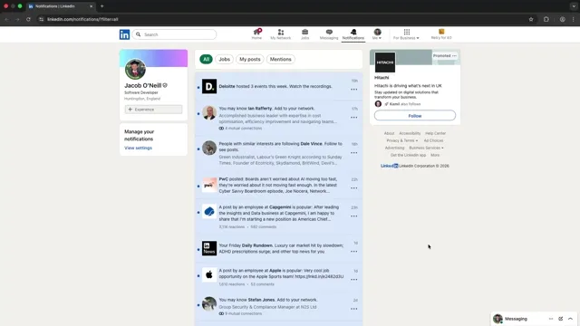

Hi, I'm Jacob
Open to work · Backend engineer roles
England, United Kingdom
I'm a self-taught software developer who went from audio engineering to leading software projects. Now I run O'Neill Technology Solutions, building everything from industrial IoT systems to compliance platforms. Backend focused, full-stack capable.
-

Go 
-

Python -

PostgreSQL -

Docker -

Linux -

C++ -

TypeScript -

HTMX
Work
-

O'Neill Technology Solutions
Director & Founder
Jan 2026 - Present
- Founder handling technical delivery, project management, and business operations across multiple client engagements.
- Deployed and configured e-learning platforms (TalentLMS) with GDPR/DPA compliance.
- Managed a SCORM content pipeline using Preact and Vite
- Coordinated localisation projects and managed subcontractors with daily standups and milestone-based delivery
-

CGS Engineering
Software Developer (Contract)
Jan 2025 - Feb 2026
- Sole developer on an ATEX industrial compliance web application, owning the full lifecycle from requirements gathering through to architecture design, implementation, and documentation.
- Build a web application serving multiple client organisations with Flask, React, PostgreSQL, and Docker, featuring role-based access control and white-label themeing.
- Produced atchitecture and technical documentation to support onboarding of potential future team members as well as handover.
-

Bioscope Technologies
Lead Software Developer
Jan 2022 - Mar 2023
- Led end-to-end development of IoT monitoring system: electronic design, embedded firmware (C++), backend APIs (Node.js and Express), frontend dashboard (React), and deployment (Linux and Docker).
- Built ESP32 sensor nodes streaming pH, temperature, and ORP data via WebSockets to a real-time dashboard for scientists.
- Automated manual measurement process, enabling scientists to focus on R&D with projected savings of £250k–£500k per year per factory.
Projects

pico-bios-kbd
A four button USB HID keyboard built on a Raspberry Pi Pico W for headless BIOS navigation

fzf-music
A terminal-based music playlist browser using fzf to select and play local playlists with cover art previews via mpv.

LinkedIn Notification Purger
A Chrome extension that bulk-deletes LinkedIn notifications, filling a missing feature gap in LinkedIn's UI.